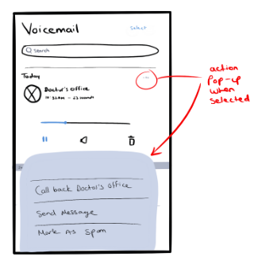
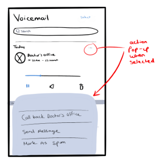

Role, Tools, & Duration
UX Researcher
Partner: Kulsoom Waqar
Experimental UX Design, Statistical Testing, Experimental Protocol, Task Analysis
Figma, Adobe XD, PAST stat software
Jan 2020 — April 2020

Overview
Experiencing discomfort when trying to access and navigate the current voicemail system, we observed that this is a pain point among the majority of voicemail users. Therefore, we identified the need for a design change from the current audio management system to a visual system that would improve efficiency for users. Following an experimental design process, my partner and I created several design iterations conducting user testing for each, and using statistical analysis to determine the validity of the hypothesis.
Hypothesis
The graphical playback controls of voicemails are more effective than the audio-only management of voicemail.
Sketches + Initial Ideation
For the initial ideation, we considered the different flaws with the current voicemail system, and what features would need to be included/removed for a better experience. Currently, voicemails are primarily audio-based, giving limited control to the user for sorting through voicemails, catching certain details in a voicemail, and deleting voicemails. As a result, this wastes users’ time and increases preventable frustration. Our proposed voicemail interface will allow users to visually see their voicemails and have easy control through buttons and interactive UI elements such as a progress bar, delete button, pin to top, etc. The measure of success variables will be time and user satisfaction.
 

User Flow
The first image below shows the primary user flow for the voicemail system, with the user task: Looking for a particular voicemail from an older date. The second image dispays the same user flow but includes the wireframe screens for each step.